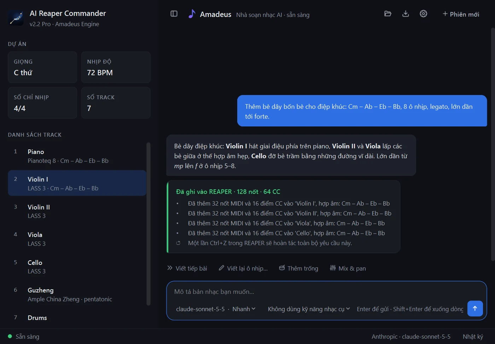

AuraLink Studio / AI Reaper Commander
Nói với DAW.
Nó tự làm.
Bạn tả bản nhạc muốn có bằng lời thường — giọng, tempo, nhạc cụ, hợp âm, cảm xúc. Trợ lý "Amadeus" viết ngay trong REAPER: tạo track, viết nốt, lực độ, pedal và đường biểu cảm, đặt tempo và đánh dấu các đoạn. Bạn giữ phần sáng tạo, nó nhận phần thao tác.

Trợ lý sản xuất ngồi sẵn trong DAW.
Tả nhạc bằng lời
Nói như với một nhạc công: giọng gì, tempo bao nhiêu, nhạc cụ nào, mấy ô nhịp, lớn dần ở đâu. Không phải vẽ từng nốt hay nhớ phím tắt.
Đôi tai producer
Mỗi bè được nghe lại trước khi vào REAPER: nốt ngoài âm vực, nốt chồng nhau, lực độ đều đều, quãng song song. Muốn sửa, bảo "viết lại ô 5–8"; mỗi yêu cầu chỉ là một lần Ctrl+Z.
Dùng AI của bạn
Claude, Gemini, GPT, DeepSeek — hoặc dịch vụ khác như NVIDIA NIM, OpenRouter. Dùng thử bằng khóa Gemini miễn phí; phối trọn một bài thì Claude Sonnet cho kết quả tốt nhất.
Kỹ năng nhạc cụ
Chọn kỹ năng đúng với nhạc cụ ảo bạn có — Pianoteq, LASS 3, Ample Guitar & Bass, Studio Drummer, đàn tranh, cổ cầm, sáo… — để Amadeus viết đúng cách chơi và keyswitch của từng thư viện.
Nắm ngữ cảnh dự án
Đọc project đang mở trong REAPER — giọng, tempo, các track và hợp âm từng ô nhịp — nên bè mới luôn hợp với phần đã có.
Lưu & mở lại phiên
Lưu cả buổi làm việc, mở lại là đúng chỗ đang dở. Giao diện Tiếng Việt, English, 中文, sáng hoặc tối.
Bạn nói mục tiêu. Nó thực thi.
› Thêm bè dây bốn bè cho điệp khúc: Cm – Ab – Eb – Bb, 8 ô nhịp, lớn dần tới forte.
⟳ Đọc project: C thứ · 72 BPM · 7 track… ✓
⟳ Viết Violin I, Violin II, Viola, Cello… ✓
⟳ Kiểm tra âm vực, dẫn giọng, lực độ… ✓
Xong. 128 nốt đã vào REAPER — một lần Ctrl+Z là hoàn tác.
Windows và macOS.
Windows 10/11 (x64) và macOS 13 trở lên; bản tải về kèm bộ cài REAPER, hướng dẫn và prompt mẫu. Bản macOS chưa được Apple công chứng: lần đầu mở, vào Cài đặt hệ thống → Quyền riêng tư & Bảo mật và bấm "Vẫn mở"; máy chip M chạy qua Rosetta. Mỗi máy kích hoạt một lần.